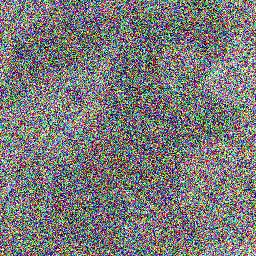
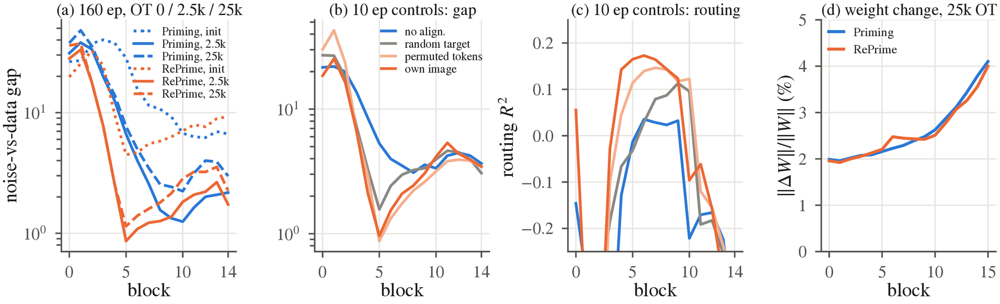
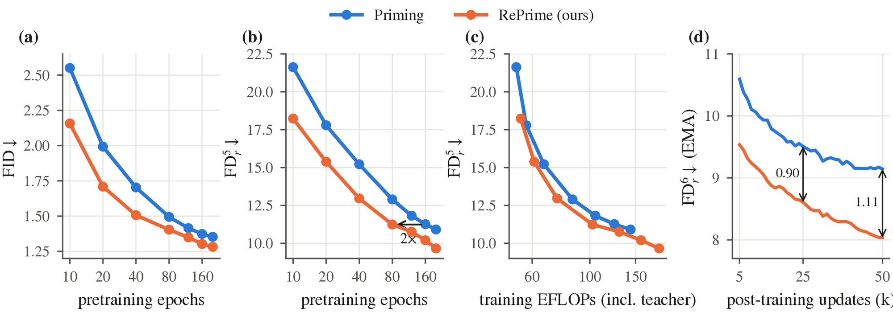
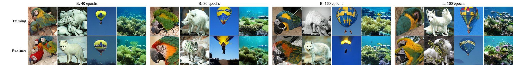
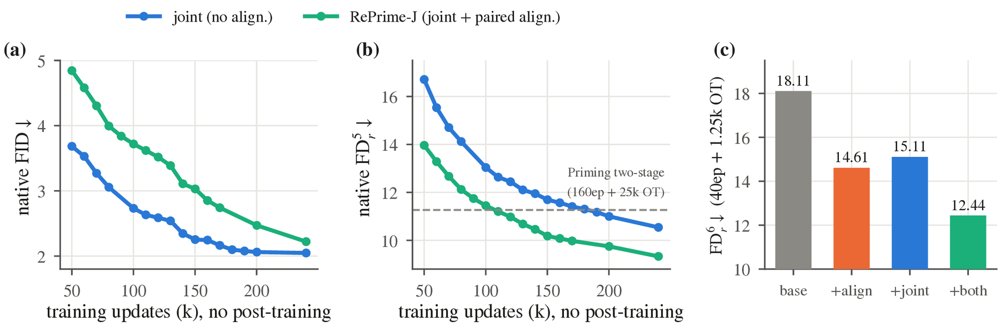

Two inputs, one network
In Priming, training feeds heavily corrupted real images; inference feeds pure noise. These two paths are not interchangeable — and only one of them has a target that knows which image it came from.
Project page
Representation alignment for faster and better one-step generators.
Priming trains a one-step generator on two kinds of inputs: corrupted real images that come with their clean counterpart, and pure noise that comes with nothing. The same alignment loss helps on one path and destroys diversity on the other. RePrime follows the pair.
1Shanghai Artificial Intelligence Laboratory · 2Peking University · 3University of Science and Technology of China · 4University of Oxford
In Priming, training feeds heavily corrupted real images; inference feeds pure noise. These two paths are not interchangeable — and only one of them has a target that knows which image it came from.
The identical loss improves fidelity and coverage on the pair. On the sample it collapses recall in all 17 configurations we tried — five target constructions, two spaces, λ down to 0.05.
Alignment carves a block where noise and data features meet. Post-training then routes noise through it — and how much image semantics flows through predicts sample quality across 16 models.
REPA made diffusion training an order of magnitude faster by aligning intermediate features with a frozen encoder. Transplanting it to a priming model looks trivial — until you ask what the target should be.
On the paired path, the priming model reconstructs a corrupted real image xs = 0.2 x0 + 0.8 ε. Its clean counterpart exists, so the target is simply the encoder's view of that same image.
On the generative path, the priming model maps pure noise to a sample. No real image corresponds to it, yet this is where the final model operates. Every target has to be invented: a random same-class image, a pool of class images, the image the OT plan matches, the sample itself, or an EMA teacher's sample.
None of these targets knows anything about this particular sample.
Post-training alone. The class is covered, but the samples are only as good as the representation the OT loss already sees.
Same 2.5k-update protocol, Priming-B initialization.
It is not a tuning problem. At λ = 0.05 recall still falls to 0.252. Switching alignment off after 750 updates still leaves it at 0.242. In the OT ConvNeXt space the projector fits its targets almost perfectly — cosine 0.998 — and recall still collapses. A well-fit target is worthless if it says nothing about the sample.
 Click to enlarge
Click to enlarge
configurations collapse recall from 0.452 to 0.149–0.252, at maintained or higher precision.
comparisons improve FD6 by 1–18%; recall never drops by more than 0.005.
A small proposition explains the asymmetry — and predicts it before any experiment.
If the target is independent of the input given the class, then μ(X) is just the class mean mc, and the optimal prediction is constant within each class.
The excess 𝒜 = 𝔼‖μ(X)‖ − 𝔼c‖mc‖ measures how much instance information the input carries about its target. When 𝒜 = 0, the loss can only pull every sample of a class toward one prototype.
Random, pooled, OT-matched, self, EMA — all are independent of the input given the class.
The best possible feature is the class mean. There is nothing instance-specific left to learn.
Precision rises. Recall falls. The model becomes a prototype printer.
After priming, the reconstruction of xs is closer in DINOv2 space to its own clean image than to its class prototype. The paired input still reveals identity.
Seen by DINOv2, an OT-matched target is barely closer to the sample than a random same-class image. The plan is meaningful to OT, not to semantics.
If the benefit were a generic regularizer or class-level semantics, random targets should recover most of it. They do not. The ranking tracks exactly how much of the target still describes the specific input.
RePrime — representation-aligned priming — adds one term to priming. Nothing else changes: not the objective, not the architecture, not inference.

At every priming step, mix a real image with Gaussian noise: xs = 0.2x0 + 0.8ε. Identity survives the corruption.
The generator reconstructs the image. From an intermediate block, take the patch tokens — the features where semantics are still forming.
Match each token, through a light 2-layer projector, to frozen DINOv2-L/14 features of the same clean image.
DINOv2 is not one of the OT feature spaces (ConvNeXt, ResNet-MAE). It supplies semantics post-training cannot obtain on its own, instead of re-weighting what the OT loss already matches.
It exists only to make gradients comparable. At inference it is gone, so the network is byte-for-byte the same as Priming. There is no inference-time cost and no new module to deploy.
A joint variant that interleaves OT updates on noise every other step with aligned reconstruction. It yields a native one-step generator without a separate post-training stage; after refinement it reaches FID 1.224 at 115M parameters.
Post-training moves every block by only 2–4% of its norm. Whatever it exploits must already exist after priming. So we looked inside the generator.
The noise-vs-data feature gap is the Fréchet distance between the two feature sets, normalized by the data covariance. After 2.5k OT updates, its minimum sits precisely at the aligned block, for all four alignment depths, and it is 2.6× tighter than the best block without alignment.
Generative-path alignment closes the gap too — largely by squeezing a class's noise features together. Across 16 models the gap is uncorrelated with quality. What predicts it is semantic routing: whether noise uses the interface the way real inputs do.

Click to enlargeAll three aligned arms form an interface at block 5 — the random arm has the smallest gap. Yet its features predict held-out CLIP no better than no alignment (R² 0.361 vs. 0.360), and noise routes almost nothing through it. Instance correspondence is the active ingredient.
Class-conditional ImageNet 256×256, one network evaluation, no guidance. Compute counts both training stages and the frozen teacher.
Down and to the left is better. Down and to the left is better. Compute is on a log scale.
Swipe the chart horizontally →
RePrime-B (157 EFLOPs) beats WF-XL/2 (3744 EFLOPs) on FID — and RePrime-L at 272 EFLOPs reaches 1.155, the best one-step FID among the methods compared in Priming.
Identical pipeline unless noted. “Ep.”: priming epochs. All models post-trained for 25k updates.
| Method | Ep. | EFLOPs | FID ↓ | FD5 ↓ | Prec. ↑ | Rec. ↑ |
|---|---|---|---|---|---|---|
| Reported in Priming (1 NFE) | ||||||
| pMF-H | — | 1968.5 | 2.15 | 8.14 | — | — |
| iMF-XL/2 | — | 3201.1 | 1.74 | 9.75 | — | — |
| Drifting-L | 1280 | 1476.4 | 1.61 | 12.59 | .815 | .602 |
| WF-XL/2 | — | 3744.4 | 1.33 | 11.07 | .762 | .674 |
| Priming-B | 160 | 124.2 | 1.38 | 11.23 | .783 | .624 |
| Priming-L | 160 | 239.0 | 1.19 | 7.10 | .781 | .649 |
| B · 115M parameters (our runs, identical pipeline) | ||||||
| Priming-B | 160 | 124.2 | 1.373 | 11.27 | .784 | .620 |
| Priming-B | 200 | 143.4 | 1.353 | 10.91 | .784 | .625 |
| RePrime-B | 120 | 129.8 | 1.349 | 10.76 | .784 | .627 |
| RePrime-B | 160 | 157.3 | 1.303 | 10.20 | .781 | .639 |
| RePrime-B | 200 | 184.8 | 1.283 | 9.66 | .784 | .631 |
| RePrime-B, block 8 | 160 | 157.3 | 1.268 | 9.82 | .781 | .641 |
| RePrime-B, block 8 | 200 | 184.8 | 1.266 | 9.66 | .782 | .635 |
| RePrime-J-B ∗ | 160 | 346.8 | 1.224 | 10.60 | .779 | .640 |
| L · 405M parameters (our runs, identical pipeline) | ||||||
| Priming-L | 160 | 239.0 | 1.174 | 7.41 | .779 | .648 |
| RePrime-L | 160 | 272.1 | 1.155 | 6.43 | .781 | .644 |
∗Joint training: 200k joint updates followed by 25k refinement updates. FID/FD5 average three sampling seeds (std. ≤ 0.022 / ≤ 0.035). Best one-step FID among the methods compared in Priming: 1.155.
The teacher adds 43% FLOPs to a B priming update. So gains per update are not enough — we also compare at matched total compute. They survive.
80 epochs match the 160-epoch baseline (FD5 11.24 vs. 11.27); 120 epochs surpass the 200-epoch one.
From the 160-epoch initialization, 3.75k updates reach the baseline's final FD6 of 9.51; 6.25k surpass it.
At 40 epochs, 2.5k updates equal the baseline after 22.5k — the largest practical saving, since OT dominates compute.
RePrime-B at 80 epochs uses less total compute than Priming-B at 120 (102.3 vs. 105.0 EFLOPs) and is better on every metric.

Click to enlarge
Click to enlargeInterleave OT updates on noise with aligned reconstruction every other step. The generative path receives the teacher's semantics through the shared weights, not through a target on the samples. The result is a native one-step generator that needs no post-training.

Three choices, three clear answers — one of which reverses a rule of thumb from diffusion.
ConvNeXt alignment fits almost perfectly (cosine 0.97) and improves FD6 by 1.3%; DINOv2 fits loosely (0.55) and improves it by 16.5%. A teacher that reinforces what OT already optimizes adds little. At full budget, MAE and ConvNeXt even hurt.
Quality follows an inverted U: early blocks are too shallow for semantics, late blocks serve pixel decoding. Block 8 of 16 is best — FD6 8.28 at 160 epochs, the best with 25k post-training updates.
In diffusion, stopping REPA early helps. In priming, priming runs at a single high noise level, where the semantic target stays informative throughout — so the benefit grows monotonically with the window.
The same REPA loss improves fidelity and coverage on the paired reconstruction path and collapses it on the generative path — every time, across 17 configurations.
Random same-class targets recover only 12–16% of the gain; permuted tokens recover 54%; the image's own target recovers all of it.
Semantic, outside the OT spaces, and imperfectly fittable. Ease of alignment is anti-correlated with benefit.
Half the priming epochs and a quarter of the OT updates. The projector is discarded, so the deployed network is unchanged.
Our study covers class-conditional ImageNet 256², the Priming architecture, and OT post-training; text-to-image and other objectives remain to be tested. Most configurations are trained once, though re-runs and seven budgets give a consistent sign. All generative-path targets here lack instance correspondence — objectives that create their own, such as trajectory-consistency views, remain open. The teacher adds compute; cached features would reduce it.
“Align the pair, not the sample.”
A principle for combining representation learning with distribution matching.Paper & code
The code is available on GitHub and the manuscript is available as a PDF. The arXiv link will be added once the preprint is public.
@misc{li2026reprime,
title = {Align the Pair, Not the Sample:
Representation Alignment for
Faster and Better One-Step Generators},
author = {Li, Mingxiao and Huang, Xuantuo and Su, Encheng and
Wang, Aoran and Zhang, Han and Zhang, Jinouwen and
Tang, Shixiang},
year = {2026},
note = {Project page: https://mingxiao-li.github.io/RePrime/}
}arXiv link will be added once the preprint is public.